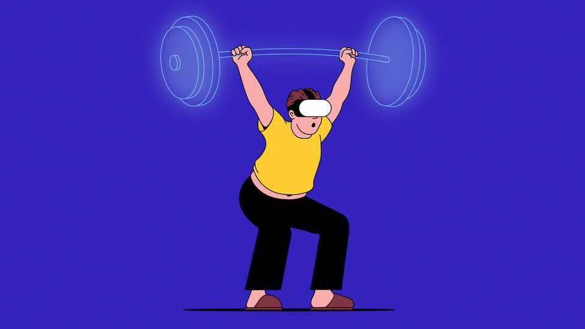

How to combine exercise with video games
Warmed up and ready, player one

Sep 3rd 2026
EXERCISING CAN be tedious. Video games are fun. What if you could combine them? Playing games while wearing a virtual-reality (VR) headset, with a motion-sensitive controller in each hand, can be taxing. “Pistol Whip” makes you step from side to side and squat frequently as you gun down foes and dodge bullets. “The Thrill of the Fight” is a virtual boxing game that works up a real sweat. In “Supernatural” and “Beat Saber” you punch and slice moving targets in time to pumping music. But does any of this count as proper exercise?
The answer is yes, though with caveats. One way to evaluate VR exercise is a measure called metabolic equivalent of task (MET). Someone at rest expends about one MET. Walking is three METs. Playing football, ten. Anything over six METs is considered “vigorous” exercise. Researchers at San Francisco State University determined that playing “The Thrill of the Fight” (which is, in fact, exhausting) was a 9.3 MET activity. Other work, published in JMIR Serious Games, found the “Flow” and “Boxing” modes in “Supernatural” also counted as vigorous exercise, at around eight METs.
In yet another study, published in Games for Health Journal in 2024, participants played a sedentary video game, two VR games, and walked on a treadmill, each for ten minutes, while having their oxygen consumption measured. Playing “The Thrill of the Fight” was comparable in aerobic intensity to walking on a treadmill, and raised heart rates by a similar amount.
So much for cardio. What about weight loss? Work published last year in Nature Medicine divided 227 adolescents into five groups: real table tennis, real football, virtual table tennis, virtual football and a control group. There was no significant difference in weight loss between the real and virtual groups. Members of both lost about 5kg after eight weeks. Those in the control group lost none.
But not all VR games are created equal. The variation in intensity between different games is greater than that between real and virtual exercise. The 2024 study, for example, found that “Beat Saber” counted as only light exercise (2-3 METs). And even vigorous games such as “The Thrill of the Fight” involve only arm movements and squats. Virtual objects cannot put up any real-world resistance, so VR games are no good for strength training.
Researchers at the University of California, Los Angeles, got round this by augmenting a cable-resistance training machine with a VR headset running a tower-defence game (in which the player must protect a stronghold from waves of virtual enemies), so that pulldowns, deadlifts and other moves triggered different attacks. Two groups trained for four weeks, one with the VR add-on, the other without. Members of the VR group showed greater improvement in strength, endurance and peak leg power. And they perceived their exertion level to be lower than it actually was.
Several other projects have found the same thing. People exercising in VR consistently underestimate how hard they are working. They also find it more fun than conventional exercise. But does this make them more likely to keep doing it? The evidence is unclear. Beyond this research, VR-exercise studies are often small and do not use comparisons or controls that allow their effects to be assessed. All that said, you don’t need a trial to show that VR exercise is better than none. ■